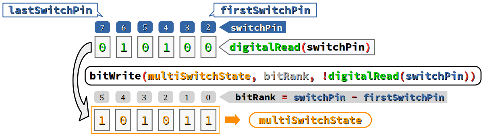

L'algèbre de Boole W est une formalisation algébrique de la logique combinatoire par laquelle les valeurs de vérité faux et vrai sont respectivement représentées par les nombres 0 et 1. On parle alors de grandeurs booléennes W. On doit cette formalisation à George Boole, mathématicien anglais du XIXe siècle W.
En langage C originel, il n'y avait pas de type booléen pour déclarer des données logiques. À la place, on pouvait employer n'importe quel type numérique (de préférence, entier) avec le critère qu'une donnée de ce type est considérée :
- fausse si sa valeur est nulle ;
- vraie si sa valeur est non nulle.
C'est conformément à ce principe d'interprétation qu'ont été définis les opérateurs booléens dits logiques ! (not), && (and), || (or).
Toutefois, l'absence d'un type booléen posait des problèmes de lisibilité. Un tel type a donc été intégré dans le noyau du langage C par la norme C99 et dans celui du langage C++ dès sa première version normalisée.
Par ailleurs, pour des questions de compacité, on est amené à en considérer une donnée entière non signée comme un mot binaire dont certains bits peuvent implémenter chacun une valeur booléenne.
On parle alors de drapeau W – en anglais, flag – au sens où les valeurs 0 et 1 signifient respectivement que le drapeau est baissé ou levé.
C'est notamment le cas dans le domaine des réseaux. Par exemple, le service DNS met en œuvre des messages dont l'en‑tête comporte systématiquement un mot binaire de 16 bits comportant toute une série de drapeaux (cf. chap. R2‑I R).
Pour la manipulation des mots binaires, les langages C et C++ mettent à disposition du codeur :
- des opérateurs booléens dits bit à bit
~(not),&(and),|(or),^(xor). - des opérateurs de décalage de bits
<<(shift left) et>>(shift right).
Les opérateurs booléens bits à bits sont particulièrement utiles pour la programmation des cartes à microcontrôleur, en particulier lors de la manipulation des données issues ou à destination d'un port d'entrées‑sorties numérique.
Dans le domaine des réseaux, ces opérateurs sont employés pour l'exploitation des mots binaires inclus dans les messages protocolaires ou la gestion des adresses IP (calculs avec masque de sous‑réseau, etc. – cf. chap. R1‑III R).
L'objectif de ce chapitre est de détailler tous ces aspects. On étudie dans l'ordre :
- le type booléen codé
boolainsi que ses constantes logiquesfalseettrue; - les opérateurs booléens dits logiques non, et, ou et leurs principales propriétés en langages C/C++ ;
- les mots binaires, en évoquant les types synonymes d'entiers
byteetworddéfinis dans le framework Arduino ; - les opérateurs de manipulation de bits – opérateurs booléens bits à bits, opérateurs de décalage – ainsi que les fonctions de lecture et d'écriture de bits dans un mot binaire définies dans le framework Arduino.
Attention, une bonne compréhension de ce chapitre nécessite quelques prérequis en logique combinatoire, en particulier la connaissance des tables de vérité des opérateurs logiques. En cas de lacunes, on pourra se reporter à ce cours et ce sujet de travaux dirigés de Sciences de l'ingénieur.
Le type booléen
Descripteur de type et valeurs booléennes
En langage C et C++, on emploie le descripteur de type bool pour déclarer des données booléennes et pour convertir des valeurs dans ce type, sachant que :
- en C (avant la norme C23), la directive
#include <stdbool.h>est requise ; - en C++ (et donc dans les programmes Arduino), l'identificateur
boolest un mot‑clef du langage ; il est intégré au noyau du langage, donc aucune directive d'inclusion n'est requise pour l'employer.
Une donnée déclarée de type bool ne peut prendre que les valeurs booléennes 0 et 1.
Toute affectation d'une valeur autre que 0 et 1 à une donnée déclarée de type bool est implicitement convertie en :
-
0si la valeur est nulle ; -
1si la valeur est non nulle.
La déclaration incohérente bool a = 2; :
- est acceptée sans avertissement lors de la compilation ;
- et affecte la valeur
1(et non pas2) à la variablea.
- Le type booléen ayant été tardivement introduit dans le noyau du langage C (seulement à partir de la norme C99), il n'était pas possible de lui attribuer le mot‑clef
bool, parce que de très nombreux programmes avaient déjà été codés en employant cet identificateur usuel en programmation (via une déclarationtypedef). Sinon, des conflits auraient pu intervenir lors de la recompilation de ces programmes. - Si un programme n'a pas redéfini déjà le type booléen avec l'identificateur
bool, on peut inclure le fichier d'en‑têtestdbool.het utiliser le descripteurboolainsi introduit. - Si un programme a déjà redéfini le type booléen avec l'identificateur
bool, on n'inclut pas le fichier d'en‑têtestdbool.het on continue le codage avec la définition existante. - En langage C++, le mot‑clef
boola été intégré au noyau depuis sa première norme ISO/ANSI. En revanche, le mot‑clef_Booln'est pas reconnu par les compilateurs. Les programmes codés en C qui emploient ce mot‑clef ne sont donc pas compilables en C++. - Le fichier d'en‑tête principal
Arduino.hG du framework Arduino définit le typebooleancomme synonyme du type standardbooldu langage C++ :
_Bool qui a été choisi, le tiret bas initial et la majuscule peu usuelle permettant de réduire le risque de conflits potentiels dans l'écosystème des programmes codés en C. Mais en contre‑partie, cette typographie inusuelle n'est pas optimale pour la lisibilité pour le descripteur d'un type aussi fondamental. À côté de char, int, float…, le mot‑clef _Bool « fait tâche ». stdbool.h C a donc été ajouté à la bibliothèque standard du langage C pour définir l'identificateur bool par substitution au mot‑clef _Bool via la directive : #define bool _Bool
stdbool.h définit en C++ l'identificateur _Bool par substitution au mot‑clef bool via une directive : #define _Bool bool
typedef bool boolean;
bool A. Règle de bonne pratique
Compte tenu des remarques supra, dans le codage de tout nouveau programme en langages C et C++, il faut ne pas employer l'identificateur _Bool. Ce dernier doit être considéré comme obsolète.
Constantes logiques false et true
Pour améliorer la lisibilité d'un code source, on peut employer les identificateurs false et true respectivement à la place des valeurs booléennes 0 et 1.
Ces identificateurs sont :
Si initCondition est une variable déclarée de type bool, il est plus lisible de coder :
if (initCondition == true) {
que :
if (initCondition == 1) {
Dans l'exemple supra, on aurait pu simplement coder :
if (initCondition) {
mais ce choix aurait été moins lisible car l'identificateur initCondition n'explicite pas suffisamment l'aspect logique de la condition exprimée.
En termes de bonnes pratiques, il est recommandé de n'employer un identificateur seul dans l'expression d'une condition logique que si cet identificateur est formulé comme un prédicat logique W, par exemple :
isInitConditionTrue
dans le cas ci‑dessus.
Compatibilité des valeurs booléennes avec les types numériques
Parce qu'elles sont à valeurs numériques (les entiers 0 et 1) :
- les constantes logiques
falseettrue, - et plus généralement toutes les données de type
bool,
sont, comme toute constante littérale entière, considérées par le compilateur dans les expressions comme étant de type int. Elles sont donc compatibles avec tous les opérateurs de calcul numérique.
Plus généralement, lors de l'évaluation d'une expression calculatoire, toute valeur booléenne est donc convertie dans un type numérique conformément aux règles générale de conversions implicites (cf. chap. C3‑VI ).
Si a et b sont deux variables déclarées de type bool, toutes les expressions hétérogènes ci‑dessous sont syntaxiquement valides :
-
1 - aexprime la négation dea(comme!a) ; -
a * bexprime la conjonction deaetb(commea && b) ; -
a * 10vaut0siavautfalseet10siavauttrue.
Spécifications de conversion d'entrées‑sorties en langage C
Dans la bibliothèque standard du langage C, le module stdio ne définit pas de spécification de conversion exclusivement dédiée aux données de type bool (ni aucun autre module). En particulier, on ne peut pas afficher ni saisir l'expression littérale des identificateurs des constantes logiques false et true.
Sorties standards
Puisque les données de type bool sont évaluées par le compilateur dans le type int, elles sont exploitables dans les fonctions de sortie standard, comme printf, avec les spécifications de conversion %d et %u dédiées aux entiers standards (cf. chap. C2‑VI ).
Le programme académique ci‑dessous :
#include <stdio.h>
#include <stdbool.h>
bool initCondition = true;
int main(void) {
printf("The initial condition equals %d.\n", initCondition);
return 0;
}
produit sur le terminal d'exécution la sortie :
The initial condition equals 1.
où, comme attendu, c'est la valeur numérique de la variable booléene initCondition qui est affichée.
- Bien entendu, le langage C a assez de « ressources » pour permettre d'afficher l'expression littérale des identificateurs des constantes logiques
falseettrue. Ce faisant, l'opérateur conditionnel se révèle très commode (cf. chap. C4‑III ). - En C++, on peut évidemment employer la même syntaxe ou l'adapter avec des éléments de langage du module
iostreampour parvenir à un résultat similaire C++.
printf("The initial condition is %s.\n", initCondition ? "true" : "false");
%s (pour string), une chaîne de caractère valant "true" ou "false" selon que la variable booléenne initCondition vaut respectivement 1 ou 0.
printf("La condition initiale est %s.\n", initCondition ? "vraie" : "fausse");
Entrées standards
%d et %u pour saisir une valeur booléenne car l'affectation mise en œuvre par une fonction comme scanf n'opère pas de conversion implicite.
Une solution consiste donc à passer par une variable intermédiaire de type entier.
Avec le programme académique ci‑dessous :
#include <stdio.h>
#include <stdbool.h>
bool initCondition = false;
int main(void) {
printf("Type the initial condition: ");
scanf("%d", &initCondition);
printf("The initial condition equals %d.\n", initCondition);
return 0;
}
provoque à la compilation sur OnlineGDB un avertissement comme :
format '%d' expects argument of type 'int *', but argument 2 has type '_Bool *'
Pour résoudre ce problème, on utilise donc une variable intermédiaire peut être le code ci‑dessous :
#include <stdio.h>
#include <stdbool.h>
bool initCondition = false;
int typedCondition = 0;
int main(void) {
printf("Type the initial condition: ");
scanf("%d", &typedCondition);
initCondition = typedCondtion;
printf("The initial condition equals %d.\n", initCondition);
return 0;
}
Dans l'exemple supra, ne pas tenir compte de l'avertissement du compilateur est risqué. En effet, si lors de l'exécution de la première version du programme, l'utilisateur saisit une valeur entière autre que 0 ou 1 – par exemple, 2 – alors c'est cette valeur qui sera mémorisée à l'adresse de la variable initCondition, ce qui n'est pas conforme à son type bool. Et bien évidemment, cela risque d'engendrer des dysfonctionnements ultérieurs.
En revanche, on ne recontre pas de problème avec la deuxième version du programme. En effet, lors de l'affectation :
initCondition = typedCondtion;
le programme exécutable opère une conversion implicite de la valeur saisie dans le type bool de initCondition, et ainsi toute valeur différente de 0 est mémorisée par la valeur 1.
Encodage des données booléennes
Le type bool est de taille 1 octet et l'encodage d'une donnée de ce type procède en binaire naturel. Puisque sa valeur ne peut être que 0 ou 1 :
- elle est encodée seulement dans le bit de rang 0 ;
- les 7 autres bits (rangs 1 à 7) restent toujours tous nuls.
Sur les architectures disposant d'une mémoire très limitée (microcontrôleur ATtiny, cartes Arduino Uno, Nano…), lorsqu'un programme manipule de nombreuses variables booléennes, il peut être judicieux de ne pas les déclarer toutes individuellement avec le type bool, mais d'en regrouper certaines dans des mots binaires (cf. infra ).
Les opérateurs booléens dits logiques
Opérateurs principaux
Les langages C/C++ définissent seulement les trois principaux opérateurs logiques : la négation (non), la conjonction (et) et la disjonction (ou inclusif).
Ces opérateurs sont de loin les plus usuels en programmation. Ils ont les caractéristiques suivantes (cf. chap. C2‑IV ) :
| Nom | Symbole | Priorité | Associativité |
|---|---|---|---|
| not | ! |
2 | ← |
| and | && |
11 | → |
| or | || |
12 | → |
Ces opérateurs acceptent des opérandes de tous types (éventuellement hétérogènes) et retourne une valeur booléenne (0 ou 1) encodée dans le type int.
Le « faible » rang de priorité (respectivement 11 et 12) des opérateurs && et || permet de composer plusieurs expressions de comparaison sans les encapsuler dans des parenthèses. Toutefois, cette pratique est parfois déconseillée par les guides de bonnes pratiques.
Pour tester si la valeur d'une variable numérique x est comprise entre 0 et 10 () bornes incluses), on peut coder sans parenthèses :
if (0 <= x && x <= 10) { // in math, 0 ≤ x ≤ 10
De façon plus « conventionnelle », on aurait pu aussi coder avec des parenthèses :
if ((x >= 0) && (x <= 10)) {
Optimisation du traitement des expressions booléennes composées
Les compilateurs récents procèdent à des optimisations dans le traitement d'évaluation des expressions composées avec les opérateurs && et || :
- Une expression de la forme
a && best nécessairement fausse si l'expression a est évaluée fausse ; - Une expression de la forme
a || best nécessairement vraie si l'expression a est évaluée vraie.
Dans ces deux cas, l'expression b n'a pas besoin être évaluée, ce qui représente un gain de temps.
Le codeur doit avoir conscience que le principe d'optimisation exposé supra peut avoir des conséquences « inattendues » lors de l'exécution d'un programme.
En particulier, si l'expression b à droite de l'opérateur && ou || inclut une opération à effet de bord, cette dernière ne sera pas forcément exécutée à chaque évaluation de l'expression globale.
Observons par exemple le programme académique ci‑dessous, dont le but est sans intérêt particulier : dans une boucle, afficher la valeur la variable de décomptage count de la boucle seulement si l'utilisateur le souhaite, choix mémorisé dans une variable booléenne choice. Le code n'est pas optimal (il est simplement conçu pour illustrer l'aspect évoqué ci‑dessus) :
#include <stdio.h>
#include <stdbool.h>
bool choice = false;
int choice_int = 0;
int count = 3;
int main(void) {
while (count >= 0) {
printf("Print (no 0 / yes 1)? ");
scanf("%d", &choice_int);
choice = choice_int;
if (choice && count--) printf("%d\n", count);
}
return 0;
}
À la ligne n° 13, l'expression testée choice && count-- comporte l'opération à effet de bord count-- qui ne sera exécutée que si, après saisie de l'utilisateur, la valeur prise par la variable choice est 1. Autrement dit, un scénario d'exécution avec un nombre d'itérations de la boucle supérieur à 3 (la valeur initiale de la variable de décomptage) est possible, par exemple :
Print (no 0 / yes 1)? 0 Print (no 0 / yes 1)? 0 Print (no 0 / yes 1)? 0 Print (no 0 / yes 1)? 0 Print (no 0 / yes 1)? 1 2 Print (no 0 / yes 1)? 1 1 Print (no 0 / yes 1)? 1 0 Print (no 0 / yes 1)? 1
Autres opérateurs
La logique combinatoire comprend d'autres opérateurs que les trois principaux (not, and, or) détaillés supra, notamment les opérateurs nand, nor, xor et xnor.
Mais en langages C/C++, ces opérateurs n'ont pas de symbole spécifique. Pour les employer, on doit donc combiner les opérateurs principaux. En particulier, si a et b sont deux expressions booléennes :
Quant aux opérateurs xor (« ou exclusif » ) et xnor (« non ou exclusif », qui est aussi l'équivalence logique), leur expression logique est plus complexe que celle des opérateurs ci‑dessus mais il y a pour chacun une alternative de codage :
Si l'on souhaite améliorer la lisibilité du codage de ces opérateurs, on peut facilement attribuer à ces opérateurs un identificateur – typiquement, xor et xnor – en recourant à des macro‑définitions via des directives #define (cf. chap. C4‑III ).
Il suffit de coder au début d'un fichier source :
-
#define xor != -
#define xnor ==
et dans la suite du code, on peut alors coder des expressions logiques comme par exemple a xor b.
Conversion d'une valeur numérique en une valeur booléenne
Dans un programme en langage C, il est parfois nécessaire de convertir une valeur numérique en une valeur booléenne. C'est notamment le cas pour certaines fonctions de test qui retournent une valeur non nulle mais pas forcément égale à 1 (comme les fonctions déclarées dans le fichier d'en‑tête ctype.h de la bibliothèque standard – cf. chap. C3‑VIII ).
Deux solutions sont recommandées :
- soit effectuer une conversion explicite via l'opérateur de cast
(bool)(cf. chap. C3‑VI ) ; - soit opérer une double négation
!!puisque l'opérateur logique not!prend forcément une valeur0ou1et puisqu'une double négation est logiquement invariante.
stdbool.h. Le programme académique ci‑dessous compte le nombre de symboles de ponctuation – au sens général du terme, c'est‑à‑dire tous les caractères symboliques – cf. chap C3‑VIII – dans le jeu de caractères ASCII restreint (cf. la capture d'écran ci‑contre).
Le compte est opéré par incrémentation d'une variable de comptage count avec la double négation des valeurs retournées par appel de la fonction ispunct en lui passant pour argument tous les codes du jeu ASCII restreint (cf. la ligne n° 6).
#include <stdio.h>
#include <ctype.h>
int main(void) {
int count = 0;
for (int c = 0x0; c <= 0x7F; c++) count += !!ispunct(c);
printf("%d\n", count);
return 0;
}
Exécuté sur OnlineGDB, ce programme affiche la valeur attendue 32.
Remarque : si on ne code pas de double négation à la ligne n° 6, on obtient la valeur erronée 128 (grossière erreur, en effet, puisque le jeu ASCII restreint ne compte que 96 caractères imprimables). Et pourquoi ? Tout simplement parce que par exemple, l'appel ispunct('$') retourne la valeur 4 et non pas 1.
Mots binaires
Généralités
On appelle mot binaire toute constante ou variable entière dont les bits mémorisent des données booléennes particulières, et non pas une donnée globale.
Il est vivement recommandé de choisir un type entier non signé à taille spécifiée (comme uint8_t, uint16_t, etc.) pour déclarer un mot binaire.
Le recours à un mot binaire plutôt qu'une collection de données booléennes est judicieux lorsque :
- l'architecture matérielle dispose d'une mémoire limitée au regard des besoins du programme ;
- les données booléennes sont liées dans le contexte du programme (par exemple, pour une série de leds, de capteurs, …).
Pour une bonne lisibilité du programme, il est recommandé, pour tout mot binaire employé dans un programme :
- de définir un type synonyme dont l'identificateur explicite le statut de mot binaire (et non pas de donnée entière usuelle) ;
- de nommer de façon contextuelle via des constantes ou des pseudo‑constantes les numéros de rang des différents bits utilisés dans le mot binaire.
Valeurs remarquables
La valeur en base 16 d'un mot binaire permet d'exprimer concisément sa valeur binaire, quartet par quartet (cf. chap C3‑II ).
Dans un quartet (groupe de 4 bits consécutifs), on a les valeurs remarquables suivantes :
| mot binaire | 0b0000 | 0b0001 |
0b0010 | 0b0100 |
0b1000 | 0b1111 |
|---|---|---|---|---|---|---|
| en base 16 | 0x0 |
0x1 |
0x2 |
0x4 |
0x8 |
0xF |
A priori moins lisible pour un codeur, la valeur en base 10 d'un mot binaire peut néanmoins présenter un intérêt calculatoire. On a les formules générale suivantes :
- la valeur 2n met à
1le bit de rang n seul ; - la valeur 2n − 1 met à
1tous les bits de rang strictement inférieur à n.
Dans un format sur 8 bits (2 digits hexadécimaux) :
- le mot
0b00100000(où seul le bit de rang 5 vaut1) vaut 25 = 32 ou encore0x20; - le mot
0b00111111(où les bits de rang 0 à 5 valent tous1) vaut 26 − 1 = 63 ou encore0x3F.
Types synonymes du framework Arduino
Parce que le recours aux mots binaires est fréquent dans le cadre de la programmation des cartes à microcontrôleur, le fichier d'en‑tête principal Arduino.h G du framework Arduino définit par synonymie deux types de mots binaires, nommés respectivement byte et word.
- Le type
byteA est synonyme deuint8_t:
typedef uint8_t byte;
uint8_t est lui‑même défini comme synonyme de unsigned char dans le fichier d'en‑tête stdint.h C, le type byte est donc de largeur fixe 8 bits. word A est synonyme de unsigned int : typedef unsigned int word;
int dépend de l'implémentation, ainsi en va-t-il du type word, dont la largeur vaut : - 16 bits sur les cartes à cœur AVR 8 bits (Arduino Uno, Nano, Mega…) ;
- 32 bits sur les cartes à cœur ARM 32 bits (Arduino Due, Zero, ESP8266…).
Pour un système d'enregistrement de données horodatées sur carte micro‑SD, on déclare ci‑dessous (ligne nº 11) un mot binaire de défauts nommé systemDefaultByte. Il regroupe 5 bits de défauts dont les numéros sont déclarées préalablement comme des constantes :
const int timeDefaultBit = 0; const int ethernetDefaultBit = 1; const int cardDefaultBit = 2; const int fileDefaultBit = 3; const int sensorDefaultbit = 4; byte systemDefaultByte = 0b00000; // no initial default
Ce mot est initialisé à la valeur 0b00000 en notation binaire (et non pas simplement la valeur 0) pour une bonne lisibilité, en explicitant les 5 bits de rang bas (les 3 bits de rang haut n'étant pas significatifs et implicitement toujours nuls).
Cette initialisation part du principe qu'à la mise en service, le système est a priori exempt de défaut (ses 5 bits de défaut sont mis à zéro). On verra infra comment changer individuellement la valeur d'un bit.
Opérateurs et fonctions de manipulation de bits
Comme toutes les données numériques, les mots binaires sont manipulables avec les opérateurs algébriques et de comparaison (cf. chap. C2‑IV ).
De plus, les langages C/C++ mettent à la disposition du codeur des opérateurs spécifiques de manipulation de bits, exposés ci‑après.
Opérateurs booléens bits à bits
Les langages C/C++ définissent quatre opérateurs booléens bits à bits – en anglais, bitwise operators W : non, et, ou exclusif, ou inclusif.
Ils effectuent une opération booléenne entre les bits respectifs du ou des opérandes, en procédant rang par rang. Ils ont les caractéristiques suivantes (cf. chap. C2‑IV ) :
| Nom | Symbole | Priorité | Associativité |
|---|---|---|---|
| not | ~ |
2 | ← |
| and | & |
8 | → |
| xor | ^ |
9 | → |
| or | | |
10 | → |
Attention : ces quatre opérateurs n'acceptent que des opérandes entiers de même taille. Et ils retournent une valeur entière encodée dans un type de même taille que celle du type des opérandes.
En particulier, comme il a été mentionné en introduction, ces opérateurs sont très employés pour extraire par masquage des adresses de sous‑réseaux et de machines à partir d'adresses IP (cf. chap. R1‑III R et ).
Les exemples académiques ci‑dessous illustrent des opérations sur des mots de 8 bits. Elles sont posées en colonnes comme des opérations arithmétiques avec l'alignement vertical des bits de même rang, pour bien comprendre le calcul booléen de chaque bit du résultat.
| not | and | or | xor |
|---|---|---|---|
~ 0b10010110 = 0b01101001 |
0b10010110 & 0b00001111 = 0b00000110 |
0b10010110 | 0b00001111 = 0b10011111 |
0b10010110 ^ 0b00001111 = 0b10011001 |
| À chaque rang, le bit du résultat est l'inverse de celui de l'opérande. | À chaque rang, on a 1 si et seulement si les opérandes sont tous les deux à 1. |
À chaque rang, on a 0 si et seulement si les opérandes sont tous les deux à 0. |
À chaque rang, on a 1 si et seulement si les bits des opérandes sont différents. |
À travers ces différents exemples, on peut voir comment les opérateurs & et | permettent de masquer une partie du mot binaire formé par le premier opérande, en employant pour deuxième opérande un mot binaire 0b00001111 formé de deux parties (ici, des quartets), l'une avec seulement des 0, l'autre avec seulement des 1 :
- avec
&, le quartet de haut rang est mis à0– donc « masqué » – tandis que le quartet de bas rang reste identique ; - avec
|, le quartet de bas rang est mis à1– donc « surexposé » – tandis que le quartet de haut rang reste identique.
Contrairement aux opérateurs arithmétiques, les opérateurs booléens bits à bits ont des rangs de priorité tous plus faibles que ceux des opérateurs de comparaison. En conséquence, ils doivent toujours être employés avec une encapsulation dans des parenthèses pour mettre en œuvre des expressions de tests.
a déclarée de type uint8_t, l'expression mal parenthésée de test : a & 0x0F == 0x0
sera toujours évaluée nulle, car la sous‑expression ici prioritaire
0x0F == 0x0 est évidemment fausse, donc évaluée nulle ; l'expression de test se résume donc à a & 0 qui vaut forcément 0.
Il faut donc encapsuler dans des parenthèses l'opération formée avec & comme ci‑dessous :
(a & 0x0F) == 0x0
pour coder correctement l'expression de test.
Opérateurs bits à bits avec affectation combinée
Les opérateurs booléens bits à bits binaires (à deux opérandes) & | ^ peuvent former autant d'opérateurs à affectation composée (cf. chap C2‑IV ).
Si a est l'identificateur d'une variable entière, et si b est une expression à valeur entière de même taille que a, alors :
- l'expression
a &= babrègea = a & b, - l'expression
a |= babrègea = a | b, - l'expression
a ^= babrègea = a ^ b.
Ces opérateurs ont, comme tous ceux à affectation composée et l'opérateur d'affectation lui‑même, le rang de priorité 14 (sur 15).
Opérateurs de décalage de bits
Les langages C/C++ définissent deux opérateurs de décalages des bits respectivement codés par les symboles >> (en anglais, shift right) et << (en anglais, shift left).
Si a est une expression de type entier (premier opérande), et n une expression de type entier non signé (deuxième opérande), alors :
-
a >> nprend la valeur de a avec ses bits décalés de n rangs vers la droite. -
a << nprend la valeur de a avec ses bits décalés de n rangs vers la gauche.
En règle générale, lors d'un décalage de bits :
- les bits entrants sont des
0; - les bits sortants sont « perdus » (comme la valeur antérieure d'une affectation).
Mais attention : si l'expression a est de type signé, alors les bits entrants à gauche ne sont pas nécessairement des 0, ils sont égaux à la valeur du bit de signe de a (sinon, le signe du résultat serait différent de celui de l'opérande).
En définitive, on constate que :
-
a >> néquivaut à une division euclidienne de a par 2n ; -
a << néquivaut à une multiplication de a par 2n.
Les deux exemples académiques illustrés dans le tableau ci‑dessous font l'hypothèse que le premier opérande est une variable a déclarée comme suit :
uint8_t a = 0b00010010; // = 20
>> |
<< |
|---|---|
(a) 0b00010100 >> 3 = 0b00000010 // = 2 |
(a) 0b00010100 << 1 = 0b00101000 // = 40 |
On a bien 20 ÷ 23 = 20 ÷ 8 = 2. En décalant les bits de 3 rangs vers la droite :
|
On a bien 20 × 21 = 20 × 2 = 40. En décalant les bits de 1 rang vers la gauche :
|
Les deux autres exemples ci‑dessous illustrent la valeur des bits entrants à gauche identiques à la valeur du bit de signe dans le cas d'un opérande a de type signé int8_t (cf. chap. C3‑II ) :
a = 0b10000000; // = -128 |
a = 0b01000000; // = 64 |
|---|---|
(a) 0b10000000 >> 6 = 0b11111110 // = -2 |
(a) 0b01000000 >> 6 = 0b00000001 // = 1 |
On a bien −128 ÷ 26 = −128 ÷ 64 = −2. Le bit de signe valant 1, les bits entrants à gauche sont des 1.
|
On a bien 64 ÷ 26 = 64 ÷ 64 = 1. Le bit de signe valant 0, les bits entrants à gauche sont des 0. |
Opérateurs de décalage de bits avec affectation combinée
Les opérateurs de décalage de bits existent aussi sous forme d'opérateurs à affectation composée (cf. chap C2‑IV ).
Si on déclare une variable a de type entier et si n est l'identificateur d'une expression de type entier non signé, alors :
- l'expression
a >>= nabrègea = a >> n, - l'expression
a <<= nabrègea = a << n.
Ces opérateurs ont, comme tous ceux à affectation composée et l'opérateur d'affectation lui‑même, le rang de priorité 14 (sur 15).
Pseudo‑fonctions Arduino de manipulation de bits d'une valeur entière
Pour faciliter la manipulation des bits des mots binaires, et plus généralement, de toute donnée de type entier de taille 4 octets maximum, le fichier d'en‑tête Arduino.h G du framework Arduino définit huit pseudo‑fonctions (macro‑définitions – cf. chap. C4‑III ), nommées bitSet, bitClear, bitRead, bitToggle et bitWrite.
Ces pseudo‑fonctions admettent des arguments et s'emploient comme des fonctions.
Parmi ces pseudo‑fonctions, celle de lecture et d'écriture ont des syntaxes d'invocation très semblables les unes des autres, dans lesquelles :
- le premier argument, désigné value, est une expression de type entier de largeur 32 bits maximum ; c'est sa valeur que la pseudo‑fonction manipule ;
- le deuxième argument, désigné bit, est une expression de type entier non signé ; sa valeur définit le rang du bit de value sur lequel la pseudo‑fonction opère.
Pseudo‑fonction de lecture de bit
Le fichier Arduino.h définit une pseudo‑fonction de lecture de bit nommée bitRead A. Une expression d'invocation de cette pseudo‑fonction, de la forme :
bitRead(value, bit)
retourne la valeur 0 ou 1 lue sur le bit de rang bit dans l'encodage de l'entier value.
Dans un programme pour carte Arduino, après la déclaration :
byte a = 0b00001000;
l'expression d'invocation bitRead(a, bit) retourne la valeur :
-
1si l'expressionbitvaut3; -
0sinon.
Pseudo‑fonctions d'écriture de bit
Le fichier Arduino.h définit quatre pseudo‑fonctions d'écriture de bit nommées respectivement bitSet A, bitClear A, bitTogle A et bitWrite A.
Attention, pour toutes ces pseudo‑fonctions :
- l'expression value doit impérativement être l'identificateur d'une variable de type entier ;
- la pseudo‑fonction opère une affectation sur cette variable et retourne sa valeur après écriture du bit dont le rang est spécifié par l'expression bit.
Plus précisément, on retiendra que :
-
bitSet(value, bit)met à1le bit de rang bit de la variable value,
et retourne cette valeur modifiée, du même type que celui de value ; -
bitClear(value, bit)met à0le bit de rang bit de la variable value,
et retourne cette valeur modifiée, du même type que celui de value ; -
bitToggle(value, bit)inverse la valeur du bit (0⇄1),
et retourne cette valeur modifiée, du même type que celui de value ; -
bitWrite(value, bit, bitValue)affecte au bit la valeur spécifiée par l'expression bitValue,
et retourne cette valeur modifiée, du même type que celui de value.
Dans un programme pour carte Arduino, après la déclaration :
byte a = 0b00001010; // = 10
l'expression d'invocation :
-
bitSet(a, 0)met à1le bit de rang0de la variablea,
autrement dit, elle affecte àa(et retourne) la valeur0b00001011(11) ; -
bitClear(a, 3)met à0le bit de rang3de la variablea,
autrement dit, elle affecte àa(et retourne) la valeur0b00000010(2) ; -
bitToggle(a, 5)inverse de0à1la valeur du bit de rang5de la variablea,
autrement dit, elle affecte àa(et retourne) la valeur0b00101010(42) ; -
bitWrite(a, 7, bitRead(a, 0))écrit le bit de rang7de la variableaà la valeur de celle lue sur son bit de rang0(ici la valeur1),
autrement dit, elle affecte àa(et retourne) la valeur0b10001010(138).
Plus généralement, la pseudo‑fonction bitWrite trouve son utilité lorsqu'on souhaite spécifier la valeur à écrire sur le bit par une expression variable.
Considérons par exemple le système figuré ci‑contre avec un bloc de micro‑interrupteurs câblés en logique négative (pour simplifier le câblage) sur autant d'entrées consécutives du port numérique d'une carte Arduino Uno.
On peut regrouper l'état de tous ces interrupteurs dans un mot binaire multiSwitchState en procédant à l'écriture de ses bits un par un avec la fonction bitWrite (cf. la ligne nº 22) dans la boucle for codée ci‑dessous :
for (int switchPin = firstSwitchPin; switchPin <= lastSwitchPin; switchPin++) {
int bitRank = switchPin - firstSwitchPin; // offset first bitRank to zero
bitWrite(multiSwitchState, bitRank, !digitalRead(switchPin));
}
et illustré par la figure suivante :
Pseudo‑fonction de génération d'un mot binaire à un seul bit non nul
Le fichier Arduino.h définit également une pseudo‑fonction de génération de mot binaire à un seul bit non nul nommée bit A.
Plus précisément, une expression d'invocation de la forme :
bit(bit)
retourne un mot binaire de type unsigned long – donc encodé sur 4 octets – dont seul le bit de rang bit vaut 1 – tous les autres bits valant 0.
Le mot binaire retourné vaut donc 2bit.
Dans un programme pour carte Arduino, l'expression d'invocation bit(3) retourne la valeur 8 (23), encodée sur 4 octets, c'est‑à‑dire en notation hexadécimale :
0x00000008
ou encore en binaire :
0b00000000000000000000000000001000
Pseudo‑fonctions de masquage
Enfin, le fichier Arduino.h définit deux pseudo‑fonctions de masquage. Nommées lowByte et highByte, elles permettent respectivement d'extraire l'octet de rang « bas » et de rang « haut » d'un mot binaire pris pour argument et désigné word ci‑après.
Ainsi, une expression d'invocation de la forme :
-
lowByte(word)A retourne dans le typeuint8_tla valeur de l'octet le plus à droite (rightmost) de la valeur prise par l'expression word ; -
highByte(word)A retourne dans le typeuint8_tla valeur du second octet en partant de la droite de la valeur prise par l'expression word.
word (de taille 2 octets seulement), il s'agit de l'octet le plus à gauche (leftmost), d'où l'identificateur « highByte ». Dans un programme pour carte Arduino, après la déclaration :
word a = 0xCAFE; // (51966)
l'expression d'invocation :
-
lowByte(a)retourne la valeurFE(254) ; -
highByte(a)retourne la valeurCA(202).